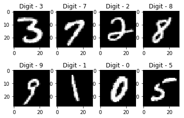
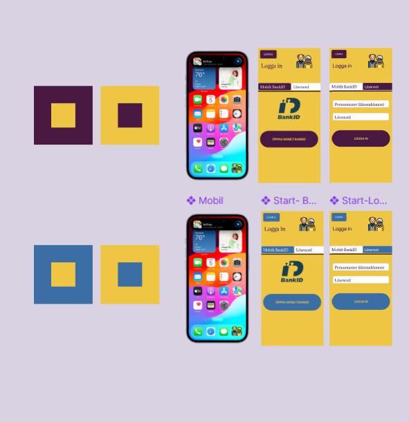

OrangeHRM test automation
End-to-end tests for the OrangeHRM web app, written in Cypress and JavaScript.
Cypress, JavaScript
See the code on GitHubQA engineer for web, API and mobile apps
I find the bugs before your users do, then write the Cypress tests that keep them from coming back. Most recently at Bayt.com / Talentera, testing recruitment and HR platforms on web and mobile.
describe('Ahmad Aldaher')
7 passing (2s)
Based in Irbid, Jordan. Open to remote QA roles.
Nov 2025 – Jul 2026
Bayt.com / Talentera
Jul 2024 – Oct 2024
MBAi Incubator, Yarmouk University
A 3-month internship on open-source software and Linux. Wrote documentation for Debian packages with the team and helped improve the MBAi YU R&D center lab.
2024
Mälardalen University, Sweden
Led my team to build a Figma prototype of an industrial energy monitoring dashboard.
Earlier
YU Innovation Center, Jordan
2020
Orange FabLab
Learned 3D printing processes and design principles using Fusion 360.
End-to-end tests for the OrangeHRM web app, written in Cypress and JavaScript.
Cypress, JavaScript
See the code on GitHubMy graduation project: a mobile app for booking barber appointments, with an AI virtual try-on that lets customers preview hairstyles, and a PDF report tool for barbershops to manage their bookings.
FlutterFlow, Firebase, AI




2021 – 2025
Yarmouk University, Irbid, Jordan
GPA 86%. Ranked first among summer semester graduates.
Jan 2024 – Jun 2024
Mälardalen University, Västerås, Sweden
Courses in Human-Centered Design and Cloud Computing.
Postman API Testing, Udemy
REST APIs, HTTP methods, authentication, assertions and test automation.
Arabic and English
I’m looking for a remote QA role. The fastest way to reach me is email.
amjo123ahmad@gmail.com